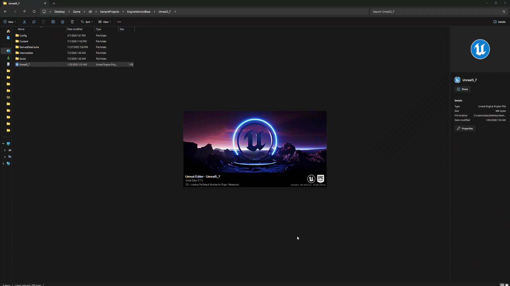
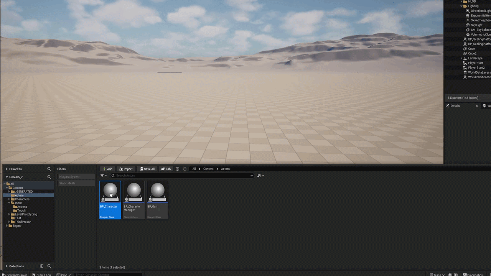
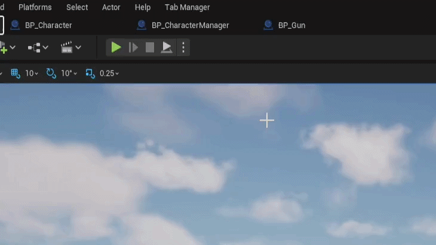
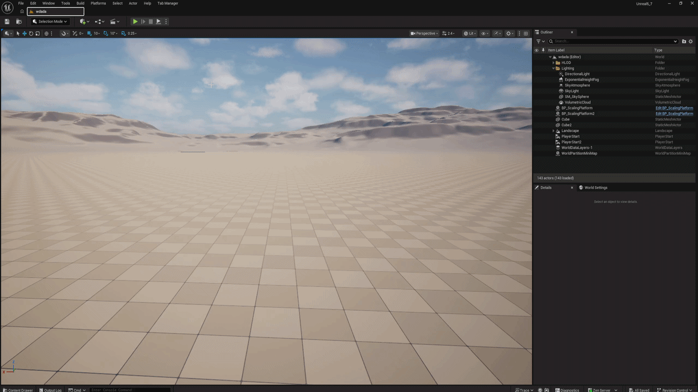
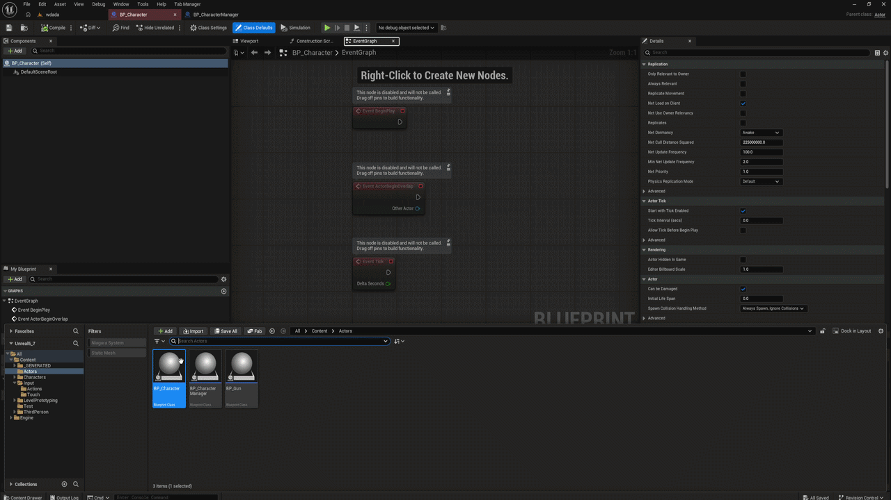

Unreal Engine Editor Plugin
Your tabs, saved. Every session.
Tab Assist helps you auto reopen your tabs when starting Unreal Engine, bring back closed tabs with a shortcut, and color-code them so you never lose your place in a big project.
Once a tab is saved, you never have to reopen it by hand again. When the Unreal editor launches, Tab Assist reads your saved list and reopens every saved tab automatically — your workspace is back exactly where you left it, before you've even touched the Content Browser.
Save the tabs you work in
Right-click a tab and add it to your saved tabs, or use Save All Opened Tabs to store your whole session. See the saving walkthrough ↑
Close the editor like normal
No extra step on shutdown. Saved tabs live in your project's per-user settings, so they survive editor restarts, crashes and machine reboots.
Launch — your tabs are already open
On startup, Tab Assist reopens each saved asset editor as a tab in the main window. Assigned tab colors are reapplied at the same time, so the strip looks identical to your last session.

Choose what comes back
The Restore Tab Behavior setting in Editor Preferences controls startup restore: Restore Only Saved Tabs (the default) reopens just your saved list, Restore Saved Tabs and Left Open Tabs also brings back whatever was open when you closed the editor, and Never Restore turns startup restore off entirely.
Saving a tab tells Tab Assist to remember that asset. Saved tabs live in your project's per-user settings, survive editor restarts, and can be reopened individually or all at once. There are two ways to save: per tab or everything at once.
Right-click the tab → Add to Saved Tabs
Right-click any open tab. Tab Assist extends the tab's context menu with a save option — click it and that asset is added to your saved list. The same menu lets you remove a tab from the saved list later.

Or save every open tab at once
Setting up a work session? Use Save All Opened Tabs from the Tab Assist menu in the editor's menu bar to store everything that's currently open in one action.

Reopen saved tabs any time
Your saved tabs are listed in the Tab Assist menu — click one to reopen just that asset, or open all stored tabs in a single action. With restore enabled in the settings, saved tabs come back automatically when the editor starts.

Everything Else It Does
Feature overviewReopen closed tabs
Closed something by accident? Ctrl + Shift + T brings back the most recently closed tab — just like a browser. Rebindable in the settings.
Tab colors
Assign a color to any tab. Colors are saved per asset and reapplied every time the tab opens, so UI, gameplay and art assets stay visually separated.
Selected-tab border
An optional border style highlights the tab you're currently in, using its assigned color — easy to spot in a crowded tab strip.
Close all tabs
Clear the whole tab strip in one command when you want a clean slate. Your saved tabs stay saved.
Content Browser integration
Right-click assets in the Content Browser to access Tab Assist actions without opening them first.
Tabs locked to the main window
Optionally force new asset editors to open as tabs in the main window instead of separate floating windows (UE 5.2+).
Tab colors in action

Settings
Editor PreferencesTab Assist's options live in the editor settings and are stored per project, per user.
| Setting | What it does |
|---|---|
| Force Lock Tab In Main Window | Keeps new asset editors docked as tabs in the main window. Turn off if you use a custom asset editor open location. UE 5.2 and later only. |
| Restore Tab Behavior | Choose what comes back on editor start: nothing, only saved tabs, or saved tabs plus whatever was left open. |
| Selected Tab Style Type | Bordered outlines the active tab with its assigned color for a more defined look; None disables it. |
| Reopen Closed Tabs Shortcut | Rebind the reopen shortcut. Default is Ctrl + Shift + T. Not all key combinations are accepted — reset to T for the default. |
Install & Enable
Getting startedAdd Tab Assist to your project
Install from Fab / the marketplace, or drop the plugin folder into your project's Plugins/ directory. Get Tab Assist on Fab.
Enable the plugin
In the editor, open Edit → Plugins, search for Tab Assist, tick the checkbox and restart the editor.
Start saving tabs
The Tab Assist menu appears in the editor's menu bar. Open your usual assets, right-click a tab, save it — done. Jump back to the walkthrough ↑